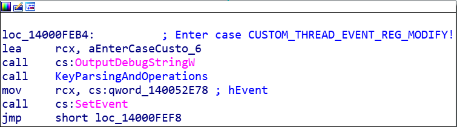
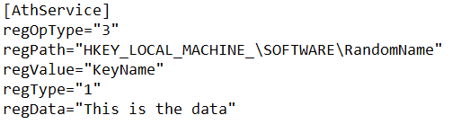

Qualcomm has a serivce program named AdminService.exe which runs on Windows machines with the Qualcomm Atheros QCA61x4 Bluethooth device. Other devices possibly have this service. You can download the entire service and driver package here: Unofficial Repo of Qualcomm Drivers In addition, the packages from this link seem to be the ones Windows magically downloads and installs when you update the driver via Device Manager.
So, what is wrong with this AdminService? Well, services can receive control codes from other applications. This is done with the ControlService API. Looking at the MSDN documentation the control codes after 128 (up to 255) are used by 3rd party services for their own purposes. This is what originally piqued my interest. I figured that custom control codes might preform privileged operations and these could possibly be exploited.
By chance, AdminService.exe (service name AtherosSvc) handles a bunch of custom control codes. I went down each control code case until I found code 133 (0x85). Like many of the other codes, 133 posts a message to another thread. The message code for 133 is 24162 (0x5E62). This case in the thread's GetMessage loop calls OutputDebugString with "Enter case CUSTOM_THREAD_EVENT_REG_MODIFY".

The next call to "KeyParsingAndOperations" is where the vulnerabiltiy lies. Inside, AdminService.exe looks for a file at C:\ProgramData\Atheros\AtherosServiceConfig.ini. This file is not present after a default installation. If the file is present, then there is a series of messy parsing compares and calls to GetPrivateProfileStringW execute. If you create a file and carefully debug the service you can see what the service is looking for in the configuration data. Something like the image below demonstrates how the file can be used.
For "regOpType":For "regType":
The other values in the config file have pretty obvious meanings.
Now that there is a way to create any key, with any data, anywhere, exploiting for elevating privileges is easy. An example would be something like the MSI Server at "HKEY_LOCAL_MACHINE\SYSTEM\CurrentControlSet\Services\msiserver". The "ImagePath" key could be replaced with something malicious, and the installer can be triggered by running "msiexec.exe /q /i 'random.msi'". The only problem is you won't see GUI elements because of Session 0 Isolation If you need GUI interaction I'd suggest looking at maybe injecting code into a different SYSTEM process but in session 1 (winlogon.exe for example).
I reported this issue Qualcomm on April 16th of 2019. It was publicly disclosed on October 7th here: Qualcomm Security Bulletin It was assigned CVE-2019-10617. The PoC code is available on my github here: Github Link
A few days ago I was looking at my twitter feed when I saw a write-up by @monoxgas on this exact vulnerability. Turns out, he had reported the issue last month, and now that the disclosure was public, published his work in an excellent post which can be found here: Second Write-Up